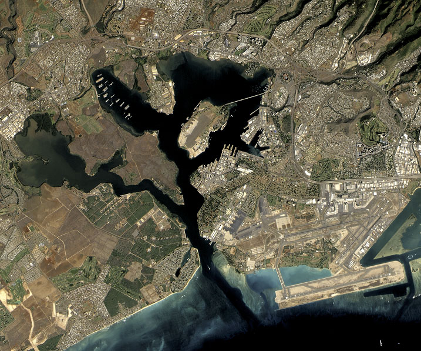
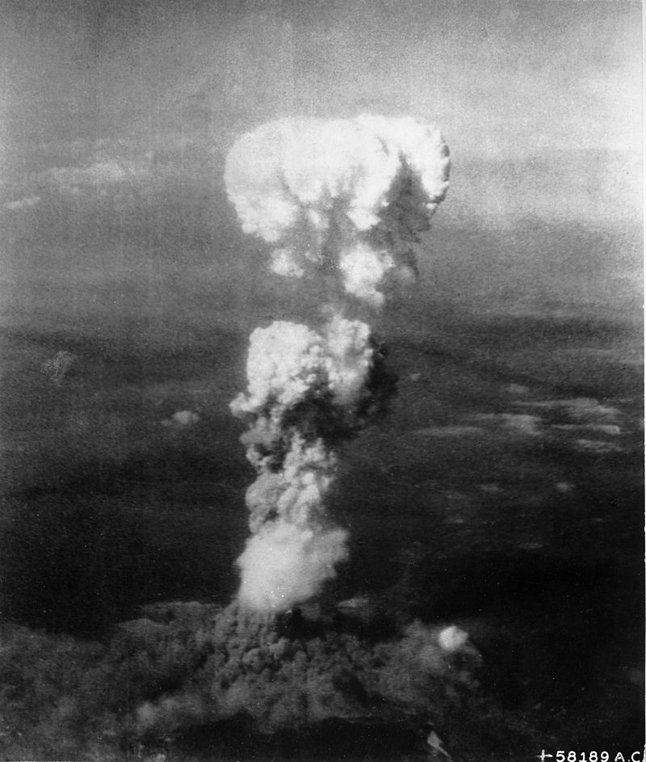
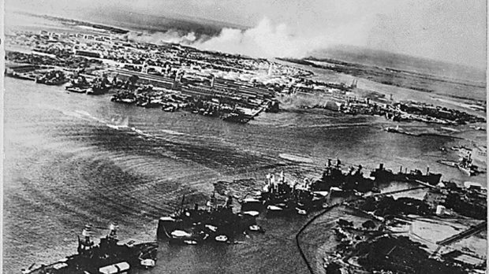
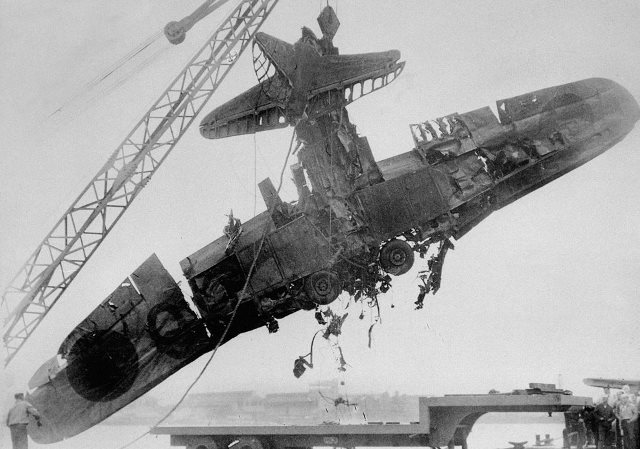

Атаката над Пърл Харбър
Какво е Пърл Харбър?
Пърл Харбър е залив в Тихия океан на остров Оаху, щата Хаваи, Съединените американски щати.
По-голямата част от залива е заета от централната база на Тихоокеанския флот на Военноморските сили на САЩ. До 1940-те години тя е най-модерната американска база. На 7 декември 1941 г. Япония напада Пърл Харбър и въвлича САЩ във Втората световна война.

Атаката
Нападението над Пърл Харбър е изненадваща въздушна атака на японския Императорски флот срещу американската военноморска база Пърл Харбър, Хаваи, извършена сутринта на 7 декември 1941 г.
Без предварително обявяване на война от японска страна, базата е атакувана от 353 японски бойни самолета - бомбардировачи и торпедоносци, на две вълни, излитащи от шест самолетоносача. Унищожена е голяма част от американския тихоокеански военноморски флот.

Причина
От 1937 г. Япония води Втората Японо-китайска война. В началото Съединените щати са неутрални, но през следващите години позицията си. Така САЩ застава на страна на Китай . Освен това в началото на 1940 г. САЩ предупреждава Япония да не окупира Френски Индокитай и демонстративно премества тихоокеанския си флот в Пърл Харбър на Хавайските острови. Въпреки американското предупреждение, през април 1940 г. Япония струпва войски в Индокитай и през септември американското правителство, под ръководството на президента Франклин Рузвелт, ограничава американските доставки на нефт и черни метали към Япония (по това време Япония доставя 80% от нефта си от САЩ).
Загуби
Загуби за американците
- 2403 души мъртви
- 1178 ранени
- 12 потънали или повалени кораба
- 9 повредени кораба
- 164 унищожени самолета
- 159 повредени самолета
Загуби за японците
- 65 пилоти и хора от екипажите на подводниците мъртви
- 29 унищожени самолета
- 5 унищожени двуместни подводници
- един военнопленник (командир-лейтенант на подводница Сакамаки Кацуо).
Последици
В отговор на атаката над Пърл Харбър, В утрото на 6 август 1945 година, американският бомбардировач B-29 „Енола Гей“ хвърля над японския град Хирошима атомна бомба „Little Boy“. Три дни по-късно е хвърлена и втора атомна бомба - „Fat Man“, с която е разрушен град Нагасаки.

Митове и легенди
1. Вашингтон не е знаел за задаваща се атака
Освен видимите политически и дипломатически признаци за растяща японска агресивност, в дните преди 7 декември 1941г. от федералните власти са изпратени няколко конкретни предупреждения до командирите в Тихоокеанския район. На 4 декември Рузвелт получава 26-страничен поверителен доклад от разузнаването на бойния флот, в който се споменава възможност за избухване на война.

2. На 7 декември Япония напада само Пърл Харбър
Макар тази операция да нанася най-големи щети и да предизвиква гибелта на много американци, японските сили атакуват същия ден Филипините, остров Уейк, Гуам, Малая, Тайланд и Мидуей.
Това са едни от най-мрачните дни във войната за Пасифика. Великобритания губи два големи бойни кораба в рамките на броени минути. В мемоарите си Уинстън Чърчил пише, че потапянето им е било най-ниската точка, до която стига Великобритания във войната. На практика японците прекършват в този ден британската военноморска сила в района.
3. Американската армия е реагирала бързо и решително
Месеци след Пърл Харбър на тихоокеанския боен театър САЩ търпят поражение след поражение. Първата значима американска офанзива е чак през февруари 1942г., когато бойният флот запчва удари по Маршаловите острови и о-в Джилбърт.

Пърл Харбър днес
Атаката на Пърл Харбър от страна на Япония е поводът за участие на Съединените щати във Втората световна война. След почти 67 години все още изтича нефт от Аризона - бойният кораб, който е потопен от японските.Бомбардировачи камикадзета. 1177 члена на екипажа загиват в това катастрофално и драматично потъване. Днес Пърл Харбър и Мемориалът на върха на бойния кораб Аризона продължават да бъдат главните туристически дестинации в Хавай с над повече от 1.5 милиона посетители на година.